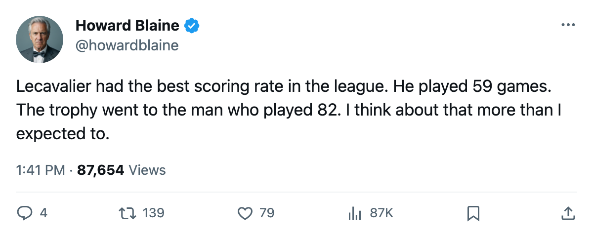

WSH
WSH VAN
VAN CGY
CGY TB
TB CHI
CHIScoring Race: Jagr takes the Art Ross at 145, Iginla the Richard at 76 for a second year running, and the best scorer in hockey played 59 games
The pace chart the Gazette published on March 9 said a 24-year-old center in Tampa was the best in hockey. The final numbers say he was right, and the reason it does not matter is a 23-game absence that no one can file under 'he should have played more'
 Howard BlaineSenior writer, The Blaine Rankings · The Hockey Gazette
Howard BlaineSenior writer, The Blaine Rankings · The Hockey Gazette
 Jaromir Jagr90 finished with 145 points in 82 games. The Art Ross Trophy goes to him, and
Jaromir Jagr90 finished with 145 points in 82 games. The Art Ross Trophy goes to him, and  Markus Naslund91 sits 2nd on 138. Jagr played every game on the schedule and finished with a 145 pace, tied for the highest per-82-game rate in the league alongside
Markus Naslund91 sits 2nd on 138. Jagr played every game on the schedule and finished with a 145 pace, tied for the highest per-82-game rate in the league alongside  Bill Guerin85.
Bill Guerin85.
But the best scorer in hockey played 59 games.  Vincent Lecavalier84 finished with 105 points on a 146 pace, the highest of any player in the league. The Gazette wrote on March 9 that a 24-year-old center in Tampa had been as good as either man in the scoring race. On the final numbers he was better.
Vincent Lecavalier84 finished with 105 points on a 146 pace, the highest of any player in the league. The Gazette wrote on March 9 that a 24-year-old center in Tampa had been as good as either man in the scoring race. On the final numbers he was better.
Guerin at 108 points in 61 games carries the same 145 pace as Jagr.  Sergei Samsonov81 at 115 in 67 carries 141.
Sergei Samsonov81 at 115 in 67 carries 141.  Ilya Kovalchuk90 at 138 in 79 carries 143. The pace chart puts Lecavalier first, Jagr and Guerin tied second, Kovalchuk third, and Samsonov fourth. On rate alone, Jagr is the best player in the league this season who stayed in the lineup.
Ilya Kovalchuk90 at 138 in 79 carries 143. The pace chart puts Lecavalier first, Jagr and Guerin tied second, Kovalchuk third, and Samsonov fourth. On rate alone, Jagr is the best player in the league this season who stayed in the lineup.

The Richard belongs to the same man as last year
 Jarome Iginla94 scored 76 goals in 76 games. The Maurice Richard Trophy is his for the second consecutive year, having scored 92 in 73 games last spring. His 76 this year sits atop a field where Naslund scored 74,
Jarome Iginla94 scored 76 goals in 76 games. The Maurice Richard Trophy is his for the second consecutive year, having scored 92 in 73 games last spring. His 76 this year sits atop a field where Naslund scored 74,  Dany Heatley88 scored 65, Kovalchuk scored 63, and
Dany Heatley88 scored 65, Kovalchuk scored 63, and  Peter Forsberg95 scored 60. Iginla is the only player in the league this season to clear 75 goals, and he did it in fewer games than anyone else in the top five.
Peter Forsberg95 scored 60. Iginla is the only player in the league this season to clear 75 goals, and he did it in fewer games than anyone else in the top five.
His 76 goals against 52 assists is the widest goals-over-assists spread among the top ten scorers. Jagr's is 69 to 76, a reversal. Lecavalier's is 47 to 58, also reversed. Iginla is a goal scorer who makes the second pass when the first one is not there. At 27, he is in the middle of the window where a power forward's goal totals peak.
The 35-year-old center who scored 71
 Sergei Fedorov86 scored 71 goals in 82 games for
Sergei Fedorov86 scored 71 goals in 82 games for  Mighty Ducks of Anaheim, 3rd in the league behind Iginla's 76 and Naslund's 74. The 35-year-old center who won the Pearson Award last season has scored 71 goals for a club that finished exactly even on the season, 229 scored and 229 allowed. At 23.1 minutes a night he is carrying the offensive load for a club with no other top-30 scorer.
Mighty Ducks of Anaheim, 3rd in the league behind Iginla's 76 and Naslund's 74. The 35-year-old center who won the Pearson Award last season has scored 71 goals for a club that finished exactly even on the season, 229 scored and 229 allowed. At 23.1 minutes a night he is carrying the offensive load for a club with no other top-30 scorer.
His 111 total points put him 18th in the scoring race, well outside any Hart conversation, but his goal total is the kind that makes voters remember him in April.
 Mario Lemieux89 at 39 scored 58 goals in 73 games.
Mario Lemieux89 at 39 scored 58 goals in 73 games.  Brett Hull83 at 40 scored 56 in 82.
Brett Hull83 at 40 scored 56 in 82.  Mike Modano90 at 34 scored 54 in 78. Jagr, Fedorov, Lemieux, Hull, Modano: five men past 33 scored 54 goals or more this season.
Mike Modano90 at 34 scored 54 in 78. Jagr, Fedorov, Lemieux, Hull, Modano: five men past 33 scored 54 goals or more this season.
The pace chart and the rookie question
Lecavalier at 146, in his 4th pro season, is the best rate in hockey.  Martin Havlat88 at 103 points in 82 games, 23 years old, carries a 103 pace and 88 overall. Pierre-Marc Bouchard77 at 29 points in 82 games is a 20-year-old center graded 77. The Bureau's Development Index has Bouchard at +6 form, which says he is trending up without yet having produced. His 11.6 minutes a night are the lowest of any player in the top 40 under-23 list, and the coach has not trusted him with the game.
Martin Havlat88 at 103 points in 82 games, 23 years old, carries a 103 pace and 88 overall. Pierre-Marc Bouchard77 at 29 points in 82 games is a 20-year-old center graded 77. The Bureau's Development Index has Bouchard at +6 form, which says he is trending up without yet having produced. His 11.6 minutes a night are the lowest of any player in the top 40 under-23 list, and the coach has not trusted him with the game.
Jagr has the Art Ross. Iginla has the Richard. And the best scorer in the league has a 105 next to his name because he played 59 of 82 games, which is the sort of fact that will complicate a Hart ballot in April.
